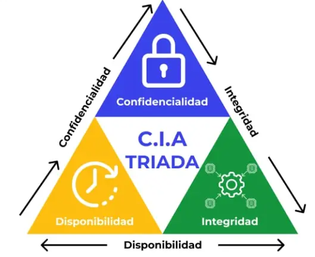

Pagina Web 📄
Es un documento individual accesible a través de Internet, que contiene información específica en formato de texto, imágenes, videos, entre otros. Se accede generalmente mediante un navegador web y su dirección única es una URL. Ejemplo: una página sobre un producto o un artículo en un blog.
Sitio Web 📒
Es un conjunto de páginas web interconectadas que comparten un dominio común. Un sitio web puede tener una estructura simple o compleja y ofrece una experiencia más amplia, ya que agrupa varias páginas para proporcionar una navegación coherente. Ejemplo: el sitio web de una empresa, que incluye diferentes secciones como "Inicio", "Nosotros", "Servicios", etc.
Aplicacion Web 🎮
Es una aplicación que se ejecuta en un navegador web en lugar de ser instalada en un dispositivo. A diferencia de un sitio web tradicional, las apps web tienen funciones más interactivas y dinámicas, similares a las de las aplicaciones móviles. Son accesibles desde cualquier dispositivo con conexión a Internet y un navegador. Ejemplo: una plataforma de redes sociales o una herramienta de productividad en línea como Google Docs.
La Ciberseguridad Hoy 🔐
La ciberseguridad es la práctica de proteger la información digital, los dispositivos y los activos de las personas y las empresas. Es un campo en constante evolución, con nuevos desafíos y tecnologías.
Ciberespacio 🛬
El ciberespacio se encuentra implementado dentro de los ordenadores y de las redes digitales de todo el mundo. Es también un tema recurrente en la ciencia ficción.
Ciberdelincuencia 🐱👤
- Robo de información
- Estafas en línea
- Ataques a sistemas
Amenazas ⚡
- Virus: Son programas maliciosos diseñados para infectar dispositivos y propagarse entre sistemas. Pueden dañar archivos, ralentizar el rendimiento del equipo y comprometer la seguridad del usuario. Algunos ejemplos son troyanos, gusanos y ransomware.
- Hackers: Individuos con conocimientos avanzados en informática que pueden acceder a sistemas informáticos sin autorización. Existen hackers éticos (white hat), que mejoran la seguridad, y hackers malintencionados (black hat), que buscan robar información o causar daños.
- Ciberacoso Forma de acoso que ocurre en plataformas digitales, como redes sociales, correos electrónicos o chats. Incluye amenazas, difamación, intimidación y otras conductas hostiles que afectan a la víctima psicológicamente.
- Robo de informacion: Consiste en la obtención ilegal de datos personales, bancarios o empresariales a través de técnicas como phishing, malware o ataques de ingeniería social. Esta información suele usarse para fraudes, suplantación de identidad o venta en la darknet.
Contrasenas 🔑
Que Hacer ✅
- Usar combinaciones complejas: Crea contraseñas largas (mínimo 12 caracteres) que incluyan letras mayúsculas, minúsculas, números y símbolos.
- Utilizar un gestor de contraseñas: Guarda y genera contraseñas seguras sin necesidad de recordarlas todas.
- Activar la autenticación en dos pasos (2FA): Añade una capa extra de seguridad con un código adicional al iniciar sesión.
Que No Hacer ❌
- Usar datos personales: Evita nombres, fechas de nacimiento o palabras comunes.
- Repetir contraseñas: No uses la misma en diferentes cuentas, ya que una filtración puede comprometerlas todas.
- Compartir o almacenar en texto plano: No guardes contraseñas en notas, correos electrónicos o documentos sin protección.
Triada CIA 🚩
- Confidencialidad: Garantiza que la información solo sea accesible para aquellos autorizados a verla. Se enfoca en proteger la privacidad de los datos y evitar accesos no autorizados. Ejemplos incluyen el uso de contraseñas, cifrado y controles de acceso.
- Integridad: Asegura que la información no sea alterada de manera no autorizada. La integridad se refiere a la exactitud y confiabilidad de los datos. Para mantenerla, se utilizan técnicas como el hash de los datos, firmas digitales y control de versiones.
- Disponibilidad: Asegura que los datos y servicios estén disponibles cuando se necesiten. En ciberseguridad, esto implica proteger los sistemas de ataques que puedan hacer que los datos o servicios no estén accesibles, como los ataques DDoS o fallos de infraestructura.
Ejemplo de Ataques 💉
MIDES - Confidencialidad

Un grupo de ciberdelincuentes accedió a más de 260 documentos internos del Mides y filtró casi 300 escaneos de cédulas de identidad de ciudadanos. Se sospecha que lograron ingresar a la red del ministerio mediante credenciales robadas o malware. El principio de la triada CIA afectado fue la confidencialidad (se expusieron datos personales sensibles lo que permite la suplantación de identidad y fraudes)
Mas InformacionGOB.AR - Integridad

El sitio web del Gobierno de la Provincia de Buenos Aires fue vulnerado y en su sección de "Noticias" apareció una publicación con insultos y amenazas al gobernador Axel Kicillof. Se publicó una imagen de un joven con capucha haciendo un gesto similar a un arma. El gobierno provincial aseguró que no se comprometió ninguna base de datos y que la publicación fue eliminada rápidamente. El prinicpio afectado es la integridad (Se modifico la seccion de Noticias de la pagina gubernamental)
Mas InformacionIntendencia Paysandu - Disponibilidad

Un ciberataque a la Intendencia de Paysandú provocó la pérdida total de su información y la interrupción de múltiples servicios. Los atacantes exigieron un rescate de US$ 650.000 en Bitcoin, advirtiendo que la suma se duplicaría si no se pagaba en el plazo de una semana. la Disponibilidad es afectada aqui (La información quedó inaccesible afectando el funcionamiento del gobierno)
Mas Informacion